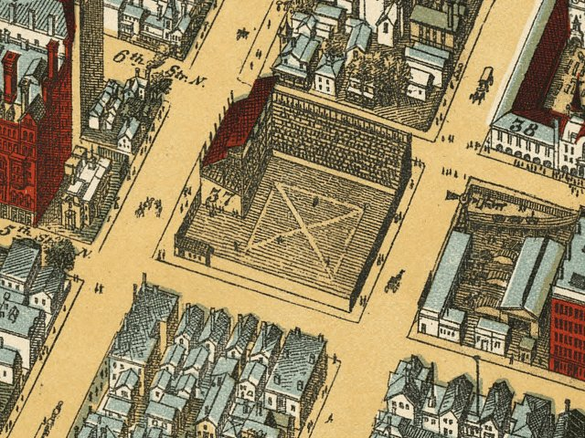

| Minneapolis, Minnesota - 1981 |
|---|
 |
| Bird's eye view of Minneapolis, Minn. F. Pezolt,
artist. E. G. Christoph Lith. Co. Pezolt, Frank. CREATED/PUBLISHED [Minneapolis] A. M. Smith, c1891. NOTES Perspective map not drawn to scale. Indexed for points of interest. REFERENCE LC Panoramic maps (2nd ed.), 397 |